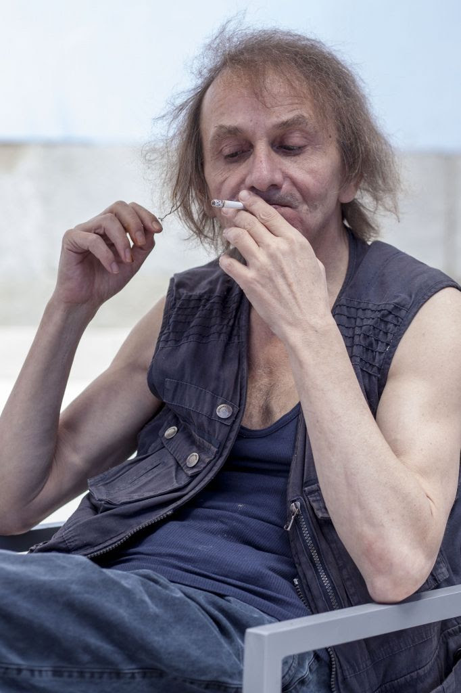

list of old issues
Drei Cafe #9
forums user Pablomigraine / Houellebecq / doofbuddy
Hi,
I'm avoiding reality as much as possible, maybe you are too. I'm spending 90% of my non-working time inside books and I've even lost interest in the AFL, although the finest boys in all of Melbourne, in their yellow and black stripes, are twirling and hopping into the finals (sad that Sydney Stack got shipped back to Victoria due to a ill-advised kebab run, though). I think part of the reason why is that seeing crowds at the stadium is a bit painful, how sad is that. Boy it'll be weird interacting when we get a chance to interact! I propose we communicate by writing messages in colourful crayon on big pieces of pastel-coloured cardboard, or alternatively seize one another's bony wrists and just grunt.
I AM READING A BOOK
I like heavy metal, including the 'extreme' death & doom stuff, but it's a hard genre to defend if you ever need to to defend it. It's incredibly conservative, absurdly unsubtle, and its edgy aesthetics have been castrated by the march of time: nowadays a Joe Rogan t-shirt pisses off more people than a Black Sabbath one. To be in a good heavy metal band you have to be an incredible musician, and yet by joining one you've limited your audience to nostalgic dads, goths, and unsociable Scandinavians.
Where I'm going with this is to a 2007 post on the talkbass.com forum called Demystifying Metal Styles, how to make fingerstyle playing heard by forum user 'pablomigraine'. 'pablomigraine' is a bass player, as a kid he watched 'Ace Ventura Pet Detective' (remember it?? Jim Carey??) and Cannibal Corpse was in it, the Cannibal Corpse bassist was playing with his fingers this incredibly fast bassline, and to boot his bass tone was so aggressive, a tone you'd normally get only playing with a pick. Playing such fast bass with fingers is borderline impossible and this guy was doing it! So young Pablomigraine spent two hours each day, for six months, teaching himself how to play ultra-fast extreme metal fingerstyle bass. Now, older and wiser, he shares his secrets: techniques to play ultafast basslines accurately with fingers, how to set up one's bass for this unforgiving style of music (you get the truss rod absolutely level, drop the action, you're not eliminating fret-click but making it even, its genius), amp setups to help your playing be heard amidst the din.
You cannot be more niche than a bass player in an extreme metal band. In heavy metal, it is often completely drowned out by guitar — on some albums, like Metallica's And Justice For All and Opeth's live Lamentations DVD, it's so poorly mixed it might as well not be present. Imagine recording a whole album and then not being able to hear your playing! Being a fingerstyle metal bassist has the worst effort-to-reward ratio in the whole wide world. I used to want to be one, but instead I ended up playing rock and roll with a bunch of scruffy goofballs in a band named after a bird (I miss you guys).

Michel Houellebecq (pronounced "well-beck") looks like shit. Look at him. Are you surprised he's French? I'm not, and I say this with affection, I bloody love the French: love their films, their music, the fact Sarkozy married Carla Bruni. Houellebecq is the sort of novelist newspapers will call an enfant terrible provocateur, because his books are ostensibly about controversial subjects (they're actually about alienation) but unlike 95% of novelists who get called that, he is clever and good, which is why he has been around for so long and why I'm pretty sure he's France's most read living author. He writes unpleasant satirical novels about unpleasant men trapped in intolerable (to them) modernity. His books read how he looks.
Last year I read Atomised (1998), I think his best work. I once mentioned it to a flatmate and the flatmate said "I've read it, all I remember is the fucking, everyone is fucking, it was so French" let me perpetuate the stereotype and agree with him. Atomised is about two dickhead half-brothers, two broken people in an broken society; one of them goes to New Age festivals with other aimless wrecks to try and fuck someone, anyone, amidst chakra classes and crystal healing workshops. Lonely people crying between Zen meditation sessions. But what the book is really about is the failure of humans connect with humans, about a cold modern French society that make it borderline impossible to love and to feel. The whole book, like Houellebecq himself, is both revolting and fascinating. You can call it misanthropic and not be wrong, but what makes Houellebecq different is the misanthropy is specific, he is too clever to simply go "aren't humans stupid and bad". In his own words he "finds the wounds of society and presses hard on them".
He's, as you'd expect, a chain-smoker. There's a video on youtube, filmed on a shaky mobile camera, where he's smoking a durry in a dark hotel room and talking about how he has never been happy.
DOOFBUDDY
In the past I've volunteered at a bunch of 'alternative' / doof festivals as a Ranger. What a Ranger does is walk around with another Ranger, a radio, and a hi-vis vest, being a responsible friend to everyone. You pick up cooked people and take them to the medical tent, you find sleeping people and make sure they're not in fact cadavers. If it's daytime, you look for lost children (doof parents are really good at losing children). If it's night you lend out your lighter out a lot. Sometimes there's a snake and you get to do crowd-control! You're always in boy-girl pairs, I've been partnered with some amazing people, one was a prison psych, real handy with folks in 'altered states'. Being a Ranger is the closest you can get to being hero on an adventure, although what you actually are is a designated driver without a car.
The prison psych and I were partnered on a daytime shift at a certain festival known for its hard partying. It's fourty-fuck-off degrees, we're walking around bopping our heads, our zone is the techno stage. There's a hill behind it and for some reason punters kept going to have a little lie-down there in the scalding sun. We find a man cooked like a turkey, drag him to the medics. We find a nice boy hiding behind a bin because a stranger had been unkind to him while he was in an altered state. Then another cooked unit, off to the medic tent, leaning on my shoulder while partner prattles away to keep him awake; it's garbage collection day out here. We found this one lovely bloke, he'd taken a bit too much, he was polite and funny and he was tender and didn't want us to leave. We nursed him for yonks. He taught us cockney rhyming slang. "Milky" meant "mate," I forget how you got there, something to do with milky bars.
The next morning, my wrecked self gets in line for coffee and this kid's in the queue in front of me, looking like a corpse. I don't know what came over me but I talked to him, this man, who I had seen in the most undignified state, I said I hope you're feeling all right mate, ey, milky. I was just trying to be nice. He was horrified. I could see perfectly in his eyes that he would rather be inside a hole and dying than talking to me. It is the worst thing I have done as a Ranger.
PERSONAL LIFE
Next newsletter is the last, I told you I'd only do ten, remember? It's been fun!!!
Hope you're good bye!
Bye,
Drei
19 Sep 2020
© 2020 Drei Cafe